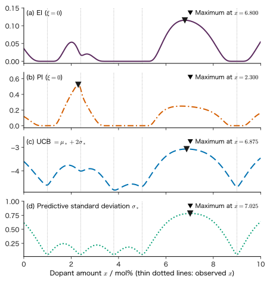
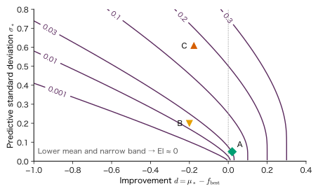
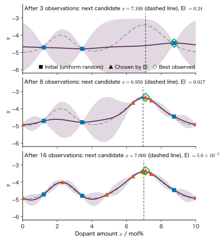

Chapter 13Bayesian Optimization and Experimental Design — Where to Measure Next
- One firing takes a day. How should we choose the next condition so that 20 experiments bring us close to the best condition?
- Should we next try the “condition that looks best” or a “condition we still know little about”? Can we settle this trade-off with numbers?
- Bayesian inference and Bayesian optimization have similar names. What is the difference?
We want to raise the ionic conductivity of a solid electrolyte by adding a dopant. The dopant amount can be varied over the range 0–10 mol%, but making a sample, firing it, and measuring its conductivity takes one day. Trying every value in steps of 0.1 mol% would take 101 days. If only 20 days are available, in what order should we try the conditions? After measuring five points, is it better to “refine the neighborhood of 2.4 mol%, the highest so far,” or to “go and look at 6–8 mol%, where we have not measured a single point yet”? If we keep doing only the former, we may stay at a small nearby peak and miss a large peak farther away. If we keep doing only the latter, we can never refine a good condition.
In this chapter we learn Bayesian optimization, which makes this decision with a surrogate model (a model that gives the predicted value at unmeasured conditions together with a band of uncertainty; here, a Gaussian process) and an acquisition function (a function that turns the value of measuring a point next into a number). In the first half (Sections 13.1–13.3), so that the reader can follow without having read the derivations of Chapter 12, we explain the predictive mean and band with figures and words, and show the trade-off between “exploration and exploitation” with numerical examples. In the second half we derive the expected improvement (EI) from an integral (Section 13.4), calculate it by hand (Section 13.5), and treat the sign conventions for maximization and minimization (Section 13.6), the handling of observation noise (Section 13.7), a fair comparison with random search and grid search (Section 13.8), the difference in goal from active learning (Section 13.9), and cautions for actual materials search (Sections 13.10–13.11).
- You can explain the difference between Bayesian inference (finding a distribution) and Bayesian optimization (using that distribution to decide the next observation point).
- You can write down the procedure of Bayesian optimization (initial points → surrogate model → acquisition function → observation → update), including the budget and the stopping rule.
- From a figure of the predictive mean and the predictive standard deviation, you can identify the points that correspond to “exploitation” and to “exploration.”
- You can write the formulas for the probability of improvement (PI), the expected improvement (EI), and the upper confidence bound (UCB), and derive EI from an integral of a Gaussian distribution. You can compute the values by hand and explain why different points are chosen.
- You can explain the sign conventions for maximization and minimization, and the problem of $f_{\mathrm{best}}$ and the recommended point when observations are noisy.
- You can explain why simple regret is compared using the median and interquartile range over many seeds, and the conditions under which Bayesian optimization loses to random search.
Sections for the introductory route: 13.1, 13.2, 13.3, 13.13. Sections 13.1–13.3 are written so that they can be read without having read Chapters 10–12. Sections marked “Detailed Route” may be skipped on a first reading.
13.1 Optimizing an Expensive Black-Box Function
13.1.1 What kind of optimization is this?
In Chapter 7, we computed the gradient of the loss function $L(\bm{w})$ and moved a little at a time in the opposite direction to search for the minimum (Chapter 7, Section 7.2). The gradient could be written as a formula and each computation was fast, so thousands or tens of thousands of iterations were possible. The optimization in this chapter is very different in its circumstances.
- Each evaluation is expensive: “obtaining one value of the function” corresponds to one experiment in which we make a sample and measure it (one day), or to one first-principles calculation (several hours).
- There is no gradient: the rate of change of the conductivity when the dopant amount is changed slightly cannot be written as a formula. Numerical differentiation requires still more evaluations. Because we do not know what is inside the function, we call it a black-box function.
- The observations are noisy: even if we remake the sample under the same condition, the measured values differ slightly.
- The number of evaluations is the budget: the available days or computing time fix an upper limit $B$ on the number of evaluations.
For such problems, it is worthwhile to decide the order of evaluations by asking “what can we learn from one evaluation?” This is because, compared with the cost of one evaluation, the computation for choosing the next point (seconds to minutes) is cheap.
13.1.2 Notation and the subject of this chapter
Notation: Symbols Used in This Chapter
- Input (experimental condition): $\bm{x}\in\R^{D}$. In the examples of this chapter $D=1$, and $x$ is the dopant amount (mol%). The range to be searched is written $\mathcal{X}$ (for example, $\mathcal{X}=[0,10]$ mol%).
- Objective function: $f(\bm{x})$. The observed value is $y=f(\bm{x})+\varepsilon$, $\varepsilon\sim\Normal(0,\sigma^{2})$ ($\sigma$ is the standard deviation of the observation noise, in the same unit as $y$). The default in this chapter is maximization: we look for $\bm{x}^{\star}=\argmax_{\bm{x}\in\mathcal{X}}f(\bm{x})$. Minimization is treated in Section 13.6.
- Data up to the $n$th observation: $\data_n=\{(\bm{x}_i,y_i)\}_{i=1}^{n}$. The evaluation budget is $B$.
- The predictive mean $\mu_*(\bm{x})$ and predictive standard deviation $\sigma_*(\bm{x})$ at an unmeasured point $\bm{x}$ (both conditioned on $\data_n$, in the same unit as $y$).
- The best value so far, $f_{\mathrm{best}}$ (by default the maximum of the observed values, $\max_i y_i$; revisited in Section 13.7). The acquisition function $a(\bm{x})$.
- The cumulative distribution function of the standard Gaussian distribution, $\Phi(z)=\int_{-\infty}^{z}\Normal(u\mid0,1)\,\dd u$ (in light type; it is a different object from the design matrix $\bm{\Phi}$ of Chapter 8), and the density $\Normal(z\mid0,1)=\dfrac{1}{\sqrt{2\pi}}e^{-z^{2}/2}$.
The subject is data C, “Dopant Amount and Ionic Conductivity,” used throughout this book (synthetic data for teaching purposes; not data of a real material). The dopant amount is $x\in[0,10]$ mol%, and the quantity of interest is the common logarithm of the conductivity, $y=\log_{10}(\sigma_{\mathrm{ion}}/\mathrm{S\,cm^{-1}})$ (dimensionless). The true function is
\begin{equation} \begin{aligned} f(x)=&{-5.0}\\ &+1.0\,e^{-(x-2.2)^{2}/(2\cdot0.7^{2})}\\ &+1.6\,e^{-(x-7.0)^{2}/(2\cdot1.1^{2})} \end{aligned} \label{eq:13-dataC} \end{equation}and the standard deviation of the observation noise is set to $\sigma=0.05$. There is a local maximum $f\approx-4.000$ at $x\approx2.2$ mol%, and a global maximum $f=-3.400$ at $x=7.0$ mol%. The setting is that the searcher does not know this formula and sees only the observed values (here $\sigma_{\mathrm{ion}}$ is the ionic conductivity, a quantity distinct from the noise $\sigma$).
Example 13.1: The experimental budget and the number of conditions
Suppose one firing and measurement takes one day and 20 days are available. (1) How many days does it take to try the dopant amount alone over the whole range $[0,10]$ mol% in steps of 0.5 mol%? (2) How many days does it take to try two conditions, the dopant amount (5 levels) and the firing temperature (5 levels), in all combinations? What happens if a third condition (holding time, 5 levels) is added? (3) What can be said from these results?
Solution. (1) Including the endpoints there are $10/0.5+1=21$ points, so 21 days. This exceeds the 20-day budget by one day. Moreover, with steps of 0.5 mol%, the position of the maximum can be determined only to within $\pm0.25$ mol%.
(2) With two conditions it is $5\times5=5^{2}=25$ days, and with three conditions $5^{3}=125$ days. With respect to the number of conditions $D$, it grows exponentially as $5^{D}$.
(3) Trying all conditions at equal spacing barely fits the budget with a single condition and quickly exceeds it with two or more. It makes sense to choose the next condition one at a time while looking at the results measured so far. This is the theme of this chapter.
13.2 The Procedure of Bayesian Optimization — Estimate First, Then Decide
13.2.1 Two components
Bayesian optimization consists of two components.
- The surrogate model: from the data $\data_n$ obtained so far, it predicts the value at a condition $\bm{x}$ that has not yet been measured, and outputs the predictive mean $\mu_*(\bm{x})$ and the predictive standard deviation $\sigma_*(\bm{x})$. The standard deviation is the width of “how much we do not know.” In this chapter we use a Gaussian process (Chapter 12).
- The acquisition function $a(\bm{x})$: a function that turns $\mu_*(\bm{x})$ and $\sigma_*(\bm{x})$ into a single number, “the value of measuring $\bm{x}$ next.” We measure next the $\bm{x}$ that maximizes it.
We summarize the procedure in Figure 13.1 and Definition 13.1.
Definition 13.1: The procedure of Bayesian optimization (maximization)
- Choose initial points $\bm{x}_1,\dots,\bm{x}_{n_0}$ and observe them (uniform random numbers, equally spaced points, past experiments, etc.). Set $n\leftarrow n_0$.
- Update the surrogate model with the data $\data_n$, and compute $\mu_*(\bm{x})$ and $\sigma_*(\bm{x})$ at each point of the search range $\mathcal{X}$.
- Find the point $\bm{x}_{n+1}=\argmax_{\bm{x}\in\mathcal{X}}a(\bm{x})$ that maximizes the acquisition function.
- Observe at $\bm{x}_{n+1}$ to obtain $y_{n+1}$. Set $\data_{n+1}=\data_n\cup\{(\bm{x}_{n+1},y_{n+1})\}$ and $n\leftarrow n+1$.
- If $n\lt B$, return to step 2. When $n=B$, report the recommended point (by default in this chapter, the point $\hat{\bm{x}}_n$ at which the observed value was largest) and finish.
13.2.2 The difference between Bayesian inference and Bayesian optimization
The names are similar, but the two have different roles.
- Bayesian inference (Chapter 4) means finding a distribution from the data $\data$. Its output is a posterior distribution or a posterior predictive distribution, and it answers “what is how likely.” It has no say in the order in which the data are collected.
- Bayesian optimization means using the predictive distribution obtained by Bayesian inference to decide the next observation point. Its output is “the condition to measure next,” and in the end “the condition that seems best.” It decides how the data themselves are to be collected.
In Figure 13.1, ① is Bayesian inference, and going around ① through ④ as a whole is Bayesian optimization. Bayesian optimization uses Bayesian inference as a component. Note, however, that the rule (the acquisition function) that decides “where to measure” from the same predictive distribution is not unique, and the choice of rule is a judgment separate from estimation (Section 13.4).
Example 13.2: The answer of estimation and the decision for the next single trial are different
Firing condition A was tried 2 times and passed both times, and condition B was tried 20 times and passed 16 times. For both, the prior distribution of the pass rate $\mu$ is the uniform distribution $\mathrm{Beta}(1,1)$. (1) Using the result of Chapter 4, find the posterior distribution of the pass rate for A and for B, the posterior mean, and the standard deviation of the posterior distribution. (2) Which one is chosen if we select “the one with the larger posterior mean”? (3) Which one is chosen if we select the one with the larger “posterior mean + 1 × posterior standard deviation”? (4) When deciding which to try for the next single trial, what does the difference between (2) and (3) mean?
Solution. (1) With a uniform prior, if there are $m$ successes in $N$ trials, the posterior distribution is $\mathrm{Beta}(1+m,\,1+N-m)$ (Chapter 4, Section 4.4). For A it is $\mathrm{Beta}(3,1)$, and for B it is $\mathrm{Beta}(17,5)$. The mean of $\mathrm{Beta}(a,b)$ is $a/(a+b)$ and its variance is $ab/\{(a+b)^{2}(a+b+1)\}$, so
$$ \begin{aligned} \text{A:}\ &\frac{3}{4}=0.750,\\ &\sqrt{\frac{3\cdot1}{4^{2}\cdot5}}=\sqrt{0.0375}\approx0.194,\\ \text{B:}\ &\frac{17}{22}\approx0.773,\\ &\sqrt{\frac{17\cdot5}{22^{2}\cdot23}}\approx0.087 . \end{aligned} $$(2) The posterior mean of B (0.773) is larger than that of A (0.750), so B.
(3) For A, $0.750+0.194=0.944$; for B, $0.773+0.087=0.860$; so A.
(4) Everything up to (1) is Bayesian inference, and it gives the answer “A has mean 0.75 but we are quite unsure; B has mean 0.77 and we know it fairly well.” (2) and (3) differ in the way of deciding that uses this answer. (2) chooses the one that looks best given present knowledge (exploitation), while (3) adds to A, whose uncertainty is larger, a bonus for “it might actually be better” and then chooses (exploration). From the same estimation result, the condition tried next changes depending on the way of deciding. This is the difference between Bayesian inference and Bayesian optimization.
13.3 Exploration and Exploitation — Where the Prediction Is High or Where the Band Is Wide
13.3.1 Reading the predictive mean and band from a figure
We derive the mechanism of Gaussian processes in Chapter 12, but what Bayesian optimization needs is how to read their output. We observed data C once at each of five dopant amounts $x=1.0,\ 2.4,\ 3.8,\ 5.0,\ 9.0$ mol% and fitted a Gaussian process; the result is shown in Figure 13.2. The solid line is the predictive mean $\mu_*(x)$, and the filled band is $\mu_*(x)\pm2\sigma_*(x)$.

Three things can be read from the figure.
- Near an observation point the band is narrow. The value at a measured location is well known (the half-width of the band narrows to about $2\times0.05=0.1$).
- Away from the observation points the band widens. The influence of an observation reaches only to a distance of about the length scale $\ell$ (here 1 mol%). Between 6 and 8.5 mol% there are no observations, so the mean returns to around the mean of the observed values (about $-4.65$) and the band is widest (half-width $2\times0.78\approx1.6$).
- The predictive mean is highest at $x=2.3$ mol% ($\mu_*=-4.102$), where the band is narrow ($\sigma_*=0.071$). On the other hand, the band is widest at $x\approx7.0$ mol% ($\mu_*=-4.646$, $\sigma_*=0.783$).
Looking at the true function (dashed line), a large peak is hidden at 7.0 mol%. But the person exploring does not know the true function. All that the five data points tell us is that “2.3 mol% is the best known so far” and that “we know nothing about the neighborhood of 7 mol% (it may be very good, or it may be bad).”
Intuition: The Gaussian process prediction with only one observation
When there is only one observation $(x_1,y_1)$, the Gaussian process prediction can be written with a short formula (it is the formula of Chapter 12, Section 12.5 with the prior mean changed from 0 to a constant $m$; here we use only the result). Let the prediction without data (the prior prediction) have mean $m$ and standard deviation $\sigma_f$, and let the “degree of similarity” of two points be
$$ \rho(x)=\exp\!\left[-\frac{(x-x_1)^{2}}{2\ell^{2}}\right]\quad(0\lt\rho\le1) $$At $x=x_1$ we have $\rho=1$, and when $x$ is a few multiples of $\ell$ away from $x_1$ we have $\rho\approx0$. Letting $g=\sigma_f^{2}/(\sigma_f^{2}+\sigma^{2})$ (close to 1 when the noise is small), we obtain
\begin{equation} \begin{aligned} \mu_*&=m+\rho\,g\,(y_1-m),\\ \sigma_*^{2}&=\sigma_f^{2}\bigl(1-\rho^{2}g\bigr) \end{aligned} \label{eq:13-onepoint} \end{equation}(with $\rho=\rho(x)$). Near the observation point ($\rho\approx1$) the mean is pulled toward the observed value $y_1$ and the variance becomes small. Far away ($\rho\approx0$) the mean returns to $m$ and the standard deviation returns to $\sigma_f$. This property does not change when the data increase: near the data the prediction is pulled in and narrow, and far from the data it returns to the prior and is wide.
Example 13.3: Finding the predictive mean and width from one observation
Suppose the prior prediction has $m=-4.5$ and $\sigma_f=0.8$, the length scale is $\ell=1.0$ mol%, and the noise standard deviation is $\sigma=0.05$. We observed $y_1=-3.90$ at $x_1=6.0$ mol%. Using Eq. \eqref{eq:13-onepoint}, find $\mu_*$ and $\sigma_*$ at $x=6.0,\ 7.0,\ 8.0$ mol%.
Solution. $g=0.64/(0.64+0.0025)$ $=0.64/0.6425\approx0.9961$, and $y_1-m=0.60$.
- $x=6.0$: $\rho=1$. $\mu_*=-4.5+0.9961\times0.60$ $\approx-3.902$. $\sigma_*^{2}=0.64\,(1-0.9961)$ $\approx0.00249$, $\sigma_*\approx0.050$.
- $x=7.0$: $\rho=e^{-1/2}\approx0.6065$. $\mu_*=-4.5+0.6065\times0.9961\times0.60$ $\approx-4.137$. $\sigma_*^{2}=0.64\,(1-0.6065^{2}\times0.9961)$ $=0.64\times0.6336\approx0.4055$, $\sigma_*\approx0.637$.
- $x=8.0$: $\rho=e^{-2}\approx0.1353$. $\mu_*\approx-4.5+0.081=-4.419$. $\sigma_*^{2}=0.64\,(1-0.0182)\approx0.6283$, $\sigma_*\approx0.793$.
At the observation point the width narrows to about the noise level (0.05); at a distance of 1 mol% it is 0.64, and at a distance of 2 mol% it almost returns to the prior value of 0.8. The mean likewise returns from the observed value $-3.90$ to the prior $-4.5$.
13.3.2 Exploitation and exploration
There are two extreme policies for deciding where to measure next.
- Exploitation: measure where the predictive mean $\mu_*(\bm{x})$ is highest. We refine the place that looks best given our current knowledge. In Figure 13.2 this is $x=2.3$ mol%.
- Exploration: measure where the predictive width $\sigma_*(\bm{x})$ is largest. We investigate the place we know least about. In Figure 13.2 this is $x\approx7.0$ mol%.
With exploitation alone, we keep refining the small peak near 2.3 mol% (true value $-4.00$) and never find the large peak at 7 mol% ($-3.40$). With exploration alone, we merely fill in the unknown places one after another and do not refine the good ones (this is close to the active learning of Section 13.9). An acquisition function combines the two into a single number and strikes a balance between them. The simplest form, which we also saw in Chapter 1, Section 1.5, is
\begin{equation} \mathrm{UCB}(\bm{x})=\mu_*(\bm{x})+\kappa\,\sigma_*(\bm{x}) \label{eq:13-ucb} \end{equation}($\kappa\ge0$). With $\kappa=0$ it is exploitation only, and the larger $\kappa$ is, the more it leans toward exploration (UCB stands for upper confidence bound. $\kappa$ is a different quantity from the condition number of Chapter 7, Section 7.2).
Example 13.4: How many times the width must we buy before the chosen point changes?
In the prediction of Figure 13.2, compare candidate P: $x=2.3$ mol% ($\mu_*=-4.102$, $\sigma_*=0.071$) with candidate Q: $x=7.0$ mol% ($\mu_*=-4.646$, $\sigma_*=0.783$). (1) For $\kappa=0$ and for $\kappa=2$, which has the larger value of Eq. \eqref{eq:13-ucb}? (2) Find the value of $\kappa$ at which the chosen point changes from P to Q.
Solution. (1) For $\kappa=0$: P gives $-4.102$ and Q gives $-4.646$, so P. For $\kappa=2$: P gives $-4.102+2\times0.071=-3.960$ and Q gives $-4.646+2\times0.783=-3.080$, so Q.
(2) The value of $\kappa$ at which the two are equal is given by
If $\kappa\gt0.76$ we choose Q (exploration), and if $\kappa\lt0.76$ we choose P (exploitation). This is the ratio that says how many times the width difference 0.712 is needed to make up for the predictive-mean difference 0.544. Because the choice of $\kappa$ changes the result, in Section 13.4 we also consider methods that choose based on the probability and expectation of “improvement.”
13.4 Acquisition Functions — PI, EI, and UCBDetailed Route
13.4.1 Predictions of the surrogate model (recap of results)
Let $f\sim\GP(m,k)$ be a Gaussian process whose mean function is a constant $m$ and whose covariance function is the RBF kernel $k(\bm{x},\bm{x}')=\sigma_f^{2}\exp\!\bigl(-\norm{\bm{x}-\bm{x}'}^{2}/(2\ell^{2})\bigr)$. Given $n$ observations $\bm{y}\in\R^{n}$, the predictive distribution of the latent function $f_*=f(\bm{x}_*)$ at a test input $\bm{x}_*$ is $p(f_*\mid\data_n)=\Normal(f_*\mid\mu_*,\sigma_*^{2})$ (Chapter 12, Section 12.4), with
\begin{equation} \begin{aligned} \mu_*&=m+\bm{k}_*^{\tp}\bm{K}_y^{-1}(\bm{y}-m\bm{1}),\\ \sigma_*^{2}&=k(\bm{x}_*,\bm{x}_*)-\bm{k}_*^{\tp}\bm{K}_y^{-1}\bm{k}_* . \end{aligned} \label{eq:13-gp} \end{equation}Here $\bm{K}_y=\bm{K}+\sigma^{2}\bm{I}\in\R^{n\times n}$ (with $K_{ij}=k(\bm{x}_i,\bm{x}_j)$), $\bm{k}_*\in\R^{n}$ (whose $i$th component is $k(\bm{x}_i,\bm{x}_*)$), and $\bm{1}\in\R^{n}$ is the vector whose components are all 1. What the acquisition function uses is the predictive distribution of the latent function $f_*$ (not the predictive variance $\sigma_*^{2}+\sigma^{2}$ of the observed value $y_*$). This is because what we want to know is “how good the true value is at that condition,” not the scatter of the next single measurement. In actual computations we do not form the inverse matrix but use the Cholesky decomposition of $\bm{K}_y$ (Chapter 12, Section 12.8).
13.4.2 Improvement and the probability of improvement (PI)
When we measure at $\bm{x}$, the amount by which the true value $f=f(\bm{x})$ exceeds the best value so far, $f_{\mathrm{best}}$, is called the improvement. If it falls short of it, the improvement is 0, so we define
\begin{equation} I=\max\bigl(f-f_{\mathrm{best}}-\xi,\ 0\bigr) \label{eq:13-improve} \end{equation}(with $f=f(\bm{x})$). Here $\xi\ge0$ is a margin meaning “we want to exceed it by at least this much”; making it larger shifts the search toward exploration (the default is $\xi=0$). Since $f$ is unknown, $I$ is a random variable, and its distribution is determined by $f\sim\Normal(\mu_*,\sigma_*^{2})$. In what follows we fix $\bm{x}$, drop the argument, and write $\mu_*=\mu_*(\bm{x})$ and $\sigma_*=\sigma_*(\bm{x})\gt0$. Let
\begin{equation} d=\mu_*-f_{\mathrm{best}}-\xi,\quad z=\frac{d}{\sigma_*} \label{eq:13-dz} \end{equation}Then $d$ is the “improvement in the mean” (if it is negative, the point loses on average), and $z$ is this quantity measured in units of the standard deviation of the prediction. The symbol $d$ is chosen to match the simulator display, and it is a different quantity from the polynomial degree $d$ in Chapter 8 and elsewhere (the dimension of the input is written $D$).
Definition 13.2: Probability of improvement (PI)
The probability $P\bigl(f\gt f_{\mathrm{best}}+\xi\mid\data_n\bigr)$ that an improvement occurs when we measure at $\bm{x}$ is called the probability of improvement (PI). Under a Gaussian predictive distribution it is given by the following formula.
The last equality follows from the fact that $u=(f-\mu_*)/\sigma_*$ follows the standard Gaussian distribution: $f\gt f_{\mathrm{best}}+\xi \iff u\gt-z$, and $P(u\gt-z)=1-\Phi(-z)=\Phi(z)$ (by the symmetry of the Gaussian distribution). PI does not look at the magnitude of the improvement. It gives a high value to a point just next to $f_{\mathrm{best}}$ that “almost surely exceeds it by a small amount” ($d$ slightly positive and $\sigma_*$ small), so with $\xi=0$ it tends to measure only around the best point (Figure 13.4 (b)).
13.4.3 Deriving the expected improvement (EI) from an integral
The expected improvement is what we obtain by taking the expectation while including the magnitude of the improvement.
Definition 13.3: Expected improvement (EI)
$\mathrm{EI}(\bm{x})=\Ex\bigl[I(\bm{x})\mid\data_n\bigr]$, that is, the expectation of the improvement \eqref{eq:13-improve} under the predictive distribution.
Derivation: A closed form for EI
By the definition of expectation (University Mathematics, Chapter 14, Section 14.4), removing the part $f\le f_{\mathrm{best}}+\xi$ where the integrand is 0, we have
$$ \begin{aligned} \mathrm{EI}=\int_{f_{\mathrm{best}}+\xi}^{\infty}&\bigl(f-f_{\mathrm{best}}-\xi\bigr)\\ &\times\Normal(f\mid\mu_*,\sigma_*^{2})\,\dd f . \end{aligned} $$We change variables to $u=(f-\mu_*)/\sigma_*$. Then $f=\mu_*+\sigma_*u$, $\dd f=\sigma_*\,\dd u$, and $\Normal(f\mid\mu_*,\sigma_*^{2})\,\dd f=\Normal(u\mid0,1)\,\dd u$. The improvement in the integrand is
$$ \begin{aligned} f-f_{\mathrm{best}}-\xi&=\mu_*+\sigma_*u-f_{\mathrm{best}}-\xi\\ &=d+\sigma_*u , \end{aligned} $$and the lower limit of the integral, $f=f_{\mathrm{best}}+\xi$, becomes $u=(f_{\mathrm{best}}+\xi-\mu_*)/\sigma_*$ $=-d/\sigma_*=-z$. Therefore
$$ \begin{aligned} \mathrm{EI}&=\int_{-z}^{\infty}(d+\sigma_*u)\,\Normal(u\mid0,1)\,\dd u\\ &=d\int_{-z}^{\infty}\Normal(u\mid0,1)\,\dd u\\ &\quad+\sigma_*\int_{-z}^{\infty}u\,\Normal(u\mid0,1)\,\dd u . \end{aligned} $$The integral in the first term is $P(u\gt-z)=\Phi(z)$ (the same as for PI). For the second term, differentiating $\Normal(u\mid0,1)=\frac{1}{\sqrt{2\pi}}e^{-u^{2}/2}$ gives
$$ \diff{}{u}\Normal(u\mid0,1)=-u\,\Normal(u\mid0,1) $$so an antiderivative of $u\,\Normal(u\mid0,1)$ is $-\Normal(u\mid0,1)$. Hence
$$ \begin{aligned} &\int_{-z}^{\infty}u\,\Normal(u\mid0,1)\,\dd u\\ &=\Bigl[-\Normal(u\mid0,1)\Bigr]_{-z}^{\infty}\\ &=0-\bigl(-\Normal(-z\mid0,1)\bigr)\\ &=\Normal(z\mid0,1) . \end{aligned} $$In the last step we used the fact that the density is an even function, $\Normal(-z\mid0,1)=\Normal(z\mid0,1)$. Combining the two terms gives Eq. \eqref{eq:13-ei}.
∎
Figure 13.3 shows the meaning of the integral. The area of the part of the predictive distribution that lies above $f_{\mathrm{best}}$ is PI, and the area of the integral weighted by the amount of excess is EI. The first term $d\,\Phi(z)$ is “the improvement in the mean × the probability of improvement,” and the second term $\sigma_*\Normal(z\mid0,1)$ is “the upside contributed by the width,” which grows as $\sigma_*$ grows. As the sum of these two, EI gives credit to both exploitation (large $d$) and exploration (large $\sigma_*$).
![A graph with the latent function value f* on the horizontal axis and probability density on the vertical axis. It shows the curve of a Gaussian distribution with mean −3.651 and standard deviation 0.608, with a vertical dashed line at f_best = −3.474. The part to the right of the dashed line is lightly filled, and its area is labeled as the probability of improvement, 0.386. Below it are a curve (dash-dotted line) of the product of the excess and the density and a hatched region, whose area is labeled EI = 0.164.](figs/ch13_fig13-3.svg)
13.4.4 The limit of zero width
When $\sigma_*\to0$, as directly above an observation point, $z=d/\sigma_*$ goes to $+\infty$ if $d\gt0$ and to $-\infty$ if $d\lt0$.
- $d\gt0$: $\Phi(z)\to1$ and $\sigma_*\Normal(z\mid0,1)\to0$, so $\mathrm{EI}\to d$.
- $d\lt0$: $\Phi(z)\to0$ and $\sigma_*\Normal(z\mid0,1)\to0$, so $\mathrm{EI}\to0$.
- $d=0$: $z=0$ and $\mathrm{EI}=\sigma_*\Normal(0\mid0,1)=\sigma_*/\sqrt{2\pi}\to0$.
In summary,
\begin{equation} \lim_{\sigma_*\to0}\mathrm{EI}=\max(d,\ 0) \label{eq:13-ei-limit} \end{equation}(with $d=\mu_*-f_{\mathrm{best}}-\xi$). When there is no width, the expected improvement consists only of the “improvement known for certain.” Above an observation point, $\mu_*$ lies near the observed value at that point and usually does not exceed $f_{\mathrm{best}}$, so EI is almost 0. A mechanism that keeps us from measuring the same point repeatedly is built into the formula (but with noise the story changes; see Section 13.7). In computer implementations, when $\sigma_*=0$ (or when a value that became negative through rounding was clipped to 0), we switch to Eq. \eqref{eq:13-ei-limit} so as not to divide by zero in $z=d/\sigma_*$ of Eq. \eqref{eq:13-ei}.
13.4.5 UCB and Thompson sampling
The UCB \eqref{eq:13-ucb} of Section 13.3 can be read as an “optimistic estimate,” because $\mu_*+\kappa\sigma_*$ is an upper quantile of the predictive distribution $\Normal(f_*\mid\mu_*,\sigma_*^{2})$ (for $\kappa=2$ it is the point below which about 97.7 % of the probability lies; Exercise 13.7). Srinivas et al. (2010) showed a theoretical upper bound on the cumulative regret for a choice of $\kappa$ that increases slowly with the number of evaluations. In practice, it is often fixed at around $\kappa=2$.
Another representative method is Thompson sampling. We draw just one function from the predictive distribution (posterior distribution) of the surrogate model and measure next at the point that maximizes that function. Where the width is large, the drawn function swings widely, so such a place may be chosen. The balance between exploration and exploitation enters naturally through the random numbers. Its origin goes back to Thompson's (1933) problem of choosing between two alternatives, and it is also used in COMBO (Ueno et al., 2016), a library for materials search.

Example 13.5: The difference between the points chosen by PI and EI
Suppose $f_{\mathrm{best}}=-3.47$ and $\xi=0$. Candidate A has $\mu_*=-3.45$ and $\sigma_*=0.02$ (right next to the best point), and candidate B has $\mu_*=-3.80$ and $\sigma_*=0.40$ (a place with few observations). Compute PI and EI, and answer which candidate each of them chooses. You may use $\Phi(1.000)=0.8413$, $\Normal(1.000\mid0,1)=0.2420$, $\Phi(-0.825)=0.2047$, and $\Normal(0.825\mid0,1)=0.2839$.
Solution. A: $d=-3.45+3.47=0.02$ and $z=0.02/0.02=1.000$. $\mathrm{PI}=0.841$.
$$ \begin{aligned} \mathrm{EI}_{\mathrm A}&=0.02\times0.8413+0.02\times0.2420\\ &=0.0168+0.0048=0.0217 . \end{aligned} $$B: $d=-3.80+3.47=-0.33$ and $z=-0.33/0.40=-0.825$. $\mathrm{PI}=0.205$.
$$ \begin{aligned} \mathrm{EI}_{\mathrm B}&=-0.33\times0.2047+0.40\times0.2839\\ &=-0.0676+0.1135=0.0460 . \end{aligned} $$PI chooses A (0.841 versus 0.205), and EI chooses B (0.0460 versus 0.0217). A has a high probability of improving, but even when it improves, the improvement is at most a few hundredths. B has only about a 20 % probability of improving, but the amount is large when it does. EI takes this magnitude into account as well.
13.5 Hand Calculation — The Chosen Point Depends on the Acquisition FunctionDetailed Route
The value of EI is determined by just two quantities, $d$ and $\sigma_*$. Figure 13.5 shows the contour lines of EI in the $(d,\sigma_*)$ plane. EI grows toward the right (where the mean is better) and toward the top (where the band is wider). Even when the mean is worse ($d\lt0$), EI is large if the band is wide enough. Conversely, in the lower-left region where $d\lt0$ and the band is narrow, EI is almost 0. That EI is an increasing function of both $d$ and $\sigma_*$ is checked by differentiation in Exercise 13.3.

Example 13.6: EI and UCB choose different points
Suppose $f_{\mathrm{best}}=-3.50$, $\xi=0$, and $\kappa=2$. Candidate A: $\mu_*=-3.48$, $\sigma_*=0.05$. Candidate B: $\mu_*=-3.70$, $\sigma_*=0.20$. (1) Find the EI of each. (2) Find the UCB of each. (3) Which candidate does each acquisition function choose? Explain the reason for the difference. You may use the table values $\Phi(0.4)=0.6554$, $\Normal(0.4\mid0,1)=0.3683$, $\Phi(-1)=0.1587$, and $\Normal(1\mid0,1)=0.2420$.
Solution. (1) For A: $d=-3.48+3.50=0.02$, $z=0.02/0.05=0.4$.
$$ \begin{aligned} \mathrm{EI}_{\mathrm A}&=0.02\times0.6554+0.05\times0.3683\\ &=0.01311+0.01841=0.0315 . \end{aligned} $$For B: $d=-3.70+3.50=-0.20$, $z=-0.20/0.20=-1$.
$$ \begin{aligned} \mathrm{EI}_{\mathrm B}&=-0.20\times0.1587+0.20\times0.2420\\ &=-0.03173+0.04839=0.0167 . \end{aligned} $$(2) $\mathrm{UCB}_{\mathrm A}=-3.48+2\times0.05=-3.38$, $\mathrm{UCB}_{\mathrm B}=-3.70+2\times0.20=-3.30$.
(3) EI chooses A (0.0315 versus 0.0167), and UCB chooses B ($-3.30$ versus $-3.38$). UCB decides by comparing the values “made optimistic by $2\sigma_*$,” so the optimistic value $-3.30$ of B exceeds that of A. EI counts only the part that exceeds $f_{\mathrm{best}}$, so it puts heavy weight on the fact that B improves only when the outcome is at least $1\sigma_*$ above the mean (probability 0.159). The point chosen by UCB changes with $\kappa$; the two UCB values are equal when $\kappa=(-3.48+3.70)/(0.20-0.05)\approx1.47$. For $\kappa\lt1.47$, UCB also chooses A.
The values computed by hand can be checked by the same procedure as the values in the “Putting the current numbers into the formula (for the next candidate)” field of the following simulator. The simulator takes a one-dimensional input, maximizes the acquisition function on a grid of 401 points (spacing 0.025 mol%), and makes simplifications such as taking the mean function to be the mean of the observed values (see “Simplifications” on the simulator's page).
Simulator 13.1: Advancing Bayesian optimization one step at a time
This simulator works on data C (synthetic data for teaching purposes), advancing one step at a time through the update of the surrogate model (Gaussian process) and the choice of the next point by the acquisition function. Use it to check how the points chosen by EI, UCB, and PI differ, how maximization and minimization correspond, and how the recommended point fluctuates because of observation noise.
Open in a separate window at full size →
Operate and Observe
- With the defaults right after opening (objective “maximization (maximize y)”, acquisition function EI, $\xi=0$, 3 initial points, budget 20, $\ell=1.00$ mol%, random-number seed 20261112), press “Observe the next point” three times → the initial points are placed at $x=9.314,\ 7.207,\ 1.992$ mol% (observed values $-4.828,\ -3.474,\ -4.021$), and the next candidate is $x=6.275$. Under “Putting the current numbers into the formula (for the next candidate),” read $\mu_*=-3.6509$, $\sigma_*=0.6083$, $f_{\mathrm{best}}=-3.4741$, improvement $d=-0.1768$, $z=-0.291$, and EI $=0.1644$, and check that substituting them into Eq. \eqref{eq:13-ei} gives the same value (the same numbers as in Figure 13.3).
- Keeping the observations as they are, switch the acquisition function to “UCB (upper confidence bound)” → the next candidate changes to $x=5.850$ ($\mu_*=-3.8239$, $\sigma_*=0.7333$, UCB $=-2.3574$). With “PI (probability of improvement)” it becomes $x=7.100$ ($\sigma_*=0.0969$, PI $=0.5447$). PI chooses a point right next to the best point 7.207, whereas UCB chooses a place where the band is wide. Compare with Eqs. \eqref{eq:13-pi} and \eqref{eq:13-ucb} and with Examples 13.5 and 13.6.
- Return the acquisition function to EI and press “Observe the next point” seven more times to make 10 observations → in the history table, $x$ is 6.275, 0.000, 3.625, 6.925, 6.900, 5.000, 6.900, so places where the band is wide (exploration) and the neighborhood of 7 mol% (exploitation) are chosen alternately. The simple regret in the readout falls to 0.00371 at the 7th observation but increases to 0.00660 at the 10th (Section 13.7).
- Leaving everything as it is, switch the “definition of fbest” to “the best posterior mean at the observation points” → $f_{\mathrm{best}}$ changes from $-3.3908$ to $-3.4166$, and the next candidate changes from 6.900 to 6.925. Then switch back to the best observed value and set $\xi$ to 0.10, and the candidate jumps to $x=1.225$.
- Switch the objective to “minimization (minimize −y),” press “Start over,” and press “Observe the next point” 10 times → the sequence of observed $x$ is the same as in step 3 (Section 13.6).
Questions After Operating
- Why did PI choose $x=7.100$ in step 2? Also explain why the value of PI is slightly above 0.5.
Sample answers
PI looks only at the probability of improvement, so it favors points that are likely to exceed $f_{\mathrm{best}}=-3.4741$ even slightly. Since the observed value $-3.474$ was obtained at 7.207 mol%, at the nearby $x=7.100$ the predictive mean is $-3.4632$, slightly above $f_{\mathrm{best}}$ ($d=0.011$), and since $z=d/\sigma_*\approx0.11$ we get $\Phi(z)\approx0.545$. The improvement itself is small, and PI is biased toward “certain but small improvements.”
- Why did the simple regret increase in step 3?
Sample answers
It is because the recommended point is taken to be “the point with the largest observed value.” At the 10th observation, the value $-3.3908$ was obtained at $x=6.900$. This exceeded the best observed value up to then ($-3.3964$ at 6.925), but the true value is $f(6.900)=-3.4066$, which is lower than the true value $-3.4037$ at 6.925. Because a point that happened to come out high owing to noise became the recommended point, the simple regret, which is measured with the true values, increased.
- Why is 1.225 mol% chosen, rather than the neighborhood of 7 mol%, when $\xi=0.10$ in step 4?
Sample answers
$\xi=0.10$ is the condition “an outcome is not counted as an improvement unless it is better than $f_{\mathrm{best}}$ by at least 0.10.” Near 7 mol% there are many observations and $\sigma_*$ is only about 0.03, so there is almost no prospect of exceeding it by 0.10. Near 1.2 mol%, where there are few observations, $\sigma_*$ is large and some probability of a large upward deviation remains, so EI is relatively large. Increasing $\xi$ makes the search lean toward exploration.
13.6 Sign Conventions for Maximization and MinimizationDetailed Route
The default in this chapter is maximization, but many quantities are “smaller is better,” such as grain size, loss, defect density, and computed energy. A minimization problem $\min_{\bm{x}}g(\bm{x})$ is the same problem as maximizing $f=-g$. However, the literature and software often write acquisition functions in the minimization form, and it is easy to mix up the signs. We summarize the correspondence in Table 13.1.
| Quantity | Maximization (default in this chapter) | Minimization |
|---|---|---|
| $f_{\mathrm{best}}$ | maximum so far | minimum so far |
| improvement $d$ | $\mu_*-f_{\mathrm{best}}-\xi$ | $f_{\mathrm{best}}-\mu_*-\xi$ |
| PI | $\Phi(z)$, $z=d/\sigma_*$ (in both cases choose the point with the largest value) | |
| EI | $d\,\Phi(z)+\sigma_*\Normal(z\mid0,1)$ (in both cases choose the point with the largest value) | |
| confidence bound | Maximize UCB $=\mu_*+\kappa\sigma_*$ | Minimize LCB $=\mu_*-\kappa\sigma_*$ |
That the improvement for minimization is $f_{\mathrm{best}}-\mu_*-\xi$ can be seen by converting the minimization of $g$ into the maximization of $f=-g$. The predictive mean of $f$ is $-\mu_*$, and the predictive standard deviation stays $\sigma_*$ (multiplying by the constant $-1$ does not change the magnitude of the standard deviation). The maximum of $f$ so far is $-f_{\mathrm{best}}$, so the improvement for maximization is
$$ (-\mu_*)-(-f_{\mathrm{best}})-\xi=f_{\mathrm{best}}-\mu_*-\xi $$which agrees with the minimization column of the table. EI and PI are determined only by the improvement and $\sigma_*$, so their values are the same and the selected point is the same. LCB is UCB with its sign changed ($-\mathrm{UCB}_f=\mu_*-\kappa\sigma_*$), so the maximizer of UCB equals the minimizer of LCB. The predictive mean of a Gaussian process is linear in the observed values $\bm{y}$ (Eq. \eqref{eq:13-gp}), so even if we change the sign of $\bm{y}$ and refit, only the sign of $\mu_*$ changes, and $\sigma_*$ does not depend on $\bm{y}$. This is why the sequences of observation points agree exactly in step 5 of Simulator 13.1.
Example 13.7: EI and LCB for minimization
We want to reduce the mean grain size $g$ (μm) of a sintered body. The minimum so far is $f_{\mathrm{best}}=2.10$ μm, and the prediction at a candidate point is $\mu_*=2.20$ μm, $\sigma_*=0.15$ μm (numbers for teaching purposes). Let $\xi=0$ and $\kappa=2$. (1) Find EI using the minimization formula. (2) Convert to the maximization of $f=-g$, compute EI, and verify that the results agree. (3) Find LCB. You may use $\Phi(-0.667)=0.2525$ and $\Normal(0.667\mid0,1)=0.3194$.
Solution. (1) The improvement is $d=f_{\mathrm{best}}-\mu_*=2.10-2.20=-0.10$ μm, and $z=-0.10/0.15=-0.667$.
$$ \begin{aligned} \mathrm{EI}&=-0.10\times0.2525+0.15\times0.3194\\ &=-0.0253+0.0479=0.0227\ \mathrm{\mu m}. \end{aligned} $$(2) For $f=-g$, the predictive mean is $-2.20$, the maximum so far is $-2.10$, and the standard deviation is 0.15. The improvement is $-2.20-(-2.10)=-0.10$, the same as in (1), so EI also agrees: $0.0227$ μm.
(3) $\mathrm{LCB}=2.20-2\times0.15=1.90$ μm. In minimization, the optimistic estimate is the limit on the “small side,” and we choose the point where this is small. Note also that the unit of EI is the same as that of the objective function (μm).
13.7 When the Observations Are NoisyDetailed Route
13.7.1 Being dragged along by lucky noise
So far we have taken $f_{\mathrm{best}}$ to be “the maximum of the observed values.” When the observations are noisy, this raises two problems.
- The baseline is biased upward: the more points of about equal quality we measure, the more likely it is that some of them contain values that came out high because of noise, so the maximum observed value tends to lie above the true maximum. If the baseline is too high, EI and PI become small everywhere, and exploration slows down.
- The recommended point fluctuates: if we recommend “the point with the largest observed value,” a point that came out high because of noise gets chosen. In terms of true values, another point may be better.
Figure 13.6 shows the progress of one separate run of Bayesian optimization using numpy random numbers (the sequence of random numbers differs from that of the simulator, so the positions of the points differ). At the fourth evaluation we obtained the observed value $-3.340$ at $x=7.100$ mol% (true value $-3.407$; noise $+0.067$, about 1.3 times the standard deviation), so from then on this value stays put as $f_{\mathrm{best}}$ and as the recommended point. After that, $x=6.95\sim7.0$ was measured many times and points nearly equal to the true maximum $-3.400$ were found, yet their observed values ($-3.37$ to $-3.47$) do not exceed $-3.340$. The recommended point remains 7.100, and the simple regret (Section 13.8) does not drop below 0.0066 up to the 20th evaluation.

13.7.2 Remedies
- Take $f_{\mathrm{best}}$ to be the maximum of the posterior mean: use as the baseline the maximum of the predictive mean $\mu_*(\bm{x}_i)$ at the observed points. Since $\mu_*$ is a value with the noise smoothed out, it is less easily dragged along by a single lucky measurement (step 4 of Simulator 13.1). The recommended point can likewise be taken to be “the observed point with the largest predictive mean.”
- Estimate the noise correctly: if the model noise $\sigma$ is made too small, the surrogate model tries to pass exactly through the observed values, and the mean picks up the noise. Determine $\sigma$ from repeated measurements or from the marginal likelihood (also called the evidence; Chapter 12, Section 12.7).
- Use an acquisition function that accounts for noise: there are generalizations of EI that consider the improvement of the latent function rather than of the observed values, and methods such as the knowledge gradient, which measures how much the recommended point improves with the next single evaluation (Frazier's survey, 2018).
13.7.3 Why repeat measurements at the same point
In a noiseless problem, measuring the same point twice teaches us nothing (EI becomes nearly 0; Section 13.4.4). With noise, repeating a point is meaningful. The standard deviation of the mean of $n$ measurements falls to $\sigma/\sqrt{n}$ (Chapter 2, Section 2.8), so we can tell which of two conditions with close values is better. A Gaussian process automatically averages observations at the same $x$ and lowers $\sigma_*$ at that point. This is why $x=6.900$ and $7.125$ are chosen repeatedly in Simulator 13.1.
Example 13.8: How many times must each be measured to tell two close conditions apart?
The true values of two conditions differ by $0.03$, and the noise standard deviation of each measurement is $\sigma=0.05$ (independent). (1) When each is measured once, find the probability that the order of the observed values is the opposite of the true order. (2) When each is measured $n$ times and the means are compared, find the smallest $n$ for which the probability of reversal is below 5 %. You may use $\Phi(-0.424)=0.336$ and $\Phi(-1.645)=0.05$.
Solution. (1) The difference of the observed values $\Delta=y_{\mathrm A}-y_{\mathrm B}$ follows a Gaussian distribution with mean equal to the true difference 0.03 and variance $\sigma^{2}+\sigma^{2}=2\times0.05^{2}$ (the difference of independent Gaussian variables; Chapter 2, Section 2.5). The standard deviation is $\sqrt{2}\times0.05\approx0.0707$. The order is reversed when $\Delta\lt0$, so
$$ \begin{aligned} P(\Delta\lt0)&=\Phi\!\left(\frac{0-0.03}{0.0707}\right)\\ &=\Phi(-0.424)\approx0.336 . \end{aligned} $$One time in three we get the order wrong.
(2) The standard deviation of the difference of the means is $0.0707/\sqrt{n}$. For $P\lt0.05$ we need $0.03\sqrt{n}/0.0707\gt1.645$, that is,
The smallest $n$ is 16 measurements each (32 in total). If the true difference is smaller than the noise standard deviation, telling the conditions apart uses up much of the budget. If the difference is of a size that does not matter in practice, it is also a reasonable judgment not to insist on telling them apart.
13.8 Comparison with Random Search and Grid SearchDetailed Route
13.8.1 Simple regret
The quality of an optimization method is measured by how close the recommended point reported when the budget is used up is to the true maximum.
Definition 13.4: Simple regret
Let the recommended point $\hat{\bm{x}}_n$ be the point with the largest observed value among the first $n$ observations, and let
\begin{equation} r_n=f(\bm{x}^{\star})-f(\hat{\bm{x}}_n) \label{eq:13-regret} \end{equation}be called the simple regret ($r_n\ge0$). Here $f(\bm{x}^{\star})$ is the true maximum, and $f(\hat{\bm{x}}_n)$ is the true value at the recommended point (not the observed value).
For data C, $f(\bm{x}^{\star})=-3.400$. The quantity $r_n$ can be computed only when the true function is known. It is a quantity for comparing methods on synthetic data, and it is not known in the middle of a real experiment. Because the recommended point is chosen as the “maximum of the observed values,” $r_n$ can increase even as evaluations accumulate, as in Section 13.7.
13.8.2 Comparing distributions, not a single win or loss
The result of Bayesian optimization varies greatly with the random numbers of the initial points and with the observation noise. Even if Bayesian optimization beats random search in a single run with one seed, it may lose with another seed. We therefore repeat the experiment with many seeds and compare the median and interquartile range (the 25–75 % range) of $r_n$ at each number of evaluations $n$. We use the median rather than the mean because $r_n$ follows a heavy-tailed distribution, occasionally becoming large (for example, when the search stays on the small peak), and the mean would be dragged by those few runs.
![Two graphs side by side. The horizontal axis is the number of evaluations n and the vertical axis is the simple regret (logarithmic scale). In the left panel (a), ℓ = 1 mol% with budget 20, the median of Bayesian optimization (solid line and circles) falls to about 0.004 by the 8th evaluation, while random search (dashed line and squares) is about 0.025 at the 20th evaluation. In the right panel (b), with ℓ fixed at 10 mol% and budget 30, the median of Bayesian optimization stays at about 0.04, larger than that of random search (about 0.015). Triangles are the medians for an equally spaced grid.](figs/ch13_fig13-7.svg)
default_rng: seed $20261112+r$ for Bayesian optimization, $20261112+100000+r$ for random search, and $20261112+200000+r$ for the grid noise.| Setup | Computation | Bayesian optimization | Random search | Grid | Fraction of runs in which BO is smaller |
|---|---|---|---|---|---|
| $\ell=1$, budget 20 | Figure 13.7 (a) | 0.0037 [0.00041, 0.010] | 0.025 [0.0049, 0.082] | 0.041 | 82 % |
| Simulator 13.2 | 0.0037 [0.00041, 0.010] | 0.031 [0.0053, 0.088] | 0.041 | 81.5 % | |
| $\ell=10$ fixed, budget 30 | Figure 13.7 (b) | 0.043 [0.010, 0.11] | 0.015 [0.0030, 0.044] | 0.018 | 30 % |
| Simulator 13.2 | 0.049 [0.012, 0.13] | 0.019 [0.0032, 0.054] | 0.018 | 36.5 % |
The following can be seen from Figure 13.7 (a) and Table 13.2.
- If the surrogate model is appropriate, Bayesian optimization gets close to the true maximum in a small number of evaluations. The value $\ell=1$ mol% is about the same as the widths of the peaks (0.7 mol% and 1.1 mol%), so the model can represent the two peaks. The median drops to 0.0037 around the 8th evaluation, nearly an order of magnitude smaller than that of random search at the 20th evaluation (0.025–0.031).
- Even so, it does not win every time. Comparing within the same repetitions, Bayesian optimization was smaller in about 80 % of them.
- The median stops at 0.0037 because the acquisition function is maximized on a grid with a spacing of 0.025 mol%, and because, owing to the noise, the recommended point tends to settle near $x=6.925$ (true value $-3.4037$). The regret does not keep falling toward 0. If you set the budget to 40 in the simulator, the median at the 40th evaluation is 0.0066, which is actually larger (step 4 of Simulator 13.2).
- The grid is laid out to match the budget, so each budget $n$ is a different experiment. For $n=5,15,25$ the grid measures exactly $x=7.0$, so the regret is almost 0, and ▲ jumps up and down greatly. The strength of the grid in one dimension also owes something to the good luck that the position of the maximum lies near a grid point.
13.8.3 When Bayesian optimization loses
Figure 13.7 (b) shows the case in which the length scale is fixed at $\ell=10$ mol%. Because $\ell$ is an order of magnitude longer than the peak width, the surrogate model cannot represent the two peaks and can draw only one gentle peak. Moreover, because it assumes that the function “connects smoothly” between observations, it underestimates $\sigma_*$ and ends the exploration near a wrong location. The median is 2.5–3 times that of random search, and Bayesian optimization wins in only 30–40 % of the same repetitions (30 % in the figure, 36.5 % in the simulator). Random search has no model error, so it does not lose in this way. If $\ell$ is chosen by the marginal likelihood each time (Chapter 12, Section 12.7), the simulator gives a median of 0.00165, even better than the fixed $\ell=1$. The strength of Bayesian optimization depends on how good the assumptions of the surrogate model are.
Example 13.9: The probability that random search lands near the peak
For data C, choose $x$ by random search (a uniform random number on $[0,10]$ mol%). (1) Find the probability that a single evaluation falls within $7.0\pm0.25$ mol%. (2) Find the probability that at least one of 20 evaluations falls in this range. (3) Find the regret $f(7.0)-f(7.25)$ at the end of this range, $x=7.25$ mol%. You may use $e^{-0.02583}=0.97450$.
Solution. (1) The probability of falling in an interval of width 0.5 mol% is $0.5/10=0.05$.
(2) Each evaluation is independent, so the probability that all 20 miss is $0.95^{20}\approx0.358$. The probability that at least one lands in the range is $1-0.358=0.642$.
(3) In Eq. \eqref{eq:13-dataC}, at $x=7.25$ the term of the first peak, $\exp[-(5.05)^{2}/0.98]\approx0$, is negligible. The term of the second peak is
At $x=7.0$ this term is $1.6$, so the regret is $1.6-1.5592\approx0.041$. That the median of random search at the 20th evaluation is about this size (0.025–0.031) reflects the fact that “about one of the 20 evaluations lands within 0.25 mol% of the peak.”
Simulator 13.2: Comparison with random search and grid
This simulator repeats Bayesian optimization, random search, and an equally spaced grid with the same budget over many seeds, and compares them by the median and interquartile range of the simple regret \eqref{eq:13-regret}.
Open in a separate window at full size →
Operate and Observe
- With the defaults (budget $B=20$, 200 repetitions, EI, $\xi=0$, 3 initial points, $\ell=1.00$ mol% fixed, seed 20261112), press “Run” → the medians [quartiles] at the 20th evaluation are 0.00371 [0.000413, 0.0103] for Bayesian optimization, 0.0312 [0.00526, 0.0875] for random search, and 0.0408 for the grid, and the fraction of runs in which BO was smaller is 81.5 %. At the 10th evaluation, Bayesian optimization gives 0.00371 and random search 0.0846. Compare with Table 13.2.
- Press “Example where BO loses (ℓ = 10 fixed, B = 30)” and then “Run” → Bayesian optimization gives 0.0488 [0.0125, 0.130], random search 0.0186 [0.00321, 0.0539], and the fraction is 36.5 %, so BO loses in the median.
- Press “Choose ℓ each time” and then “Run” → the median of Bayesian optimization at the 20th evaluation becomes 0.00165.
- Press “Default (EI, ℓ = 1 fixed)”, set the budget $B$ to 40, and press “Run” → the median of Bayesian optimization at the 40th evaluation is 0.00660, larger than 0.00371 for budget 20.
Questions After Operating
- In step 1, why must we not conclude from a single run that “Bayesian optimization is better than random search”?
Sample answers
Comparing within the same repetitions, Bayesian optimization wins in 81.5 %, so it loses about once in five runs. A single run may draw one of those 20 %. Methods should be compared by their distributions over many seeds (the median and interquartile range).
- Why does Bayesian optimization lose in step 2? What would keep it from losing?
Sample answers
The value $\ell=10$ mol% is an order of magnitude longer than the peak width (about 1 mol%), so the surrogate model cannot represent the two peaks. In addition, it underestimates $\sigma_*$, so it keeps measuring near a wrong location and ends the exploration. If, as in step 3, $\ell$ is chosen from the data by the marginal likelihood, the surrogate model matches the peak width and does not lose.
- In step 4, why does the median at the 40th evaluation become larger even though the budget was increased?
Sample answers
Because the recommended point is defined as “the point with the largest observed value,” the more evaluations accumulate, the more chances there are for a point that happened to come out high because of noise to become the recommended point (Section 13.7). The maximum of the observed values is biased upward from the true maximum, and the true value at that point can be somewhat lower. If the recommendation were made by the posterior mean, this increase would be suppressed.
13.9 How the Goal Differs from Active LearningDetailed Route
There are two methods that “use uncertainty to choose the next measurement point,” and their goals differ.
- Bayesian optimization: the goal is to find the best point. The acquisition function measures “improvement” (EI, PI, UCB). It does not matter if the function remains inaccurate where it is poor.
- Active learning: the goal is to improve the model as a whole (for example, to reduce the prediction error over the whole range, or to determine the boundaries of a phase diagram). The simplest rule is to measure the point where the prediction variance $\sigma_*^{2}(\bm{x})$ is largest (selection by uncertainty).
The $\sigma_*$ in (d) of Figure 13.4 corresponds to an acquisition function for active learning. Its maximum point $x=7.025$ mol% is close to the maximum point of EI, 6.800, but this is close to a coincidence. Since $\sigma_*$ does not look at the predictive mean, it measures wherever it does not know, however poor the value seems likely to be. For example, once the observations accumulate and the region near 7 mol% becomes well known, active learning goes to measure the ends at 0 mol% and 10 mol% (where the distance from the observations is large and $\sigma_*$ is large), whereas EI does not go much to such ends, where the mean is clearly low. Conversely, the observations of Bayesian optimization cluster near the maximum, so a model built from the resulting data is inaccurate far from the maximum. When “discussing the overall picture of a physical property using data collected by Bayesian optimization,” beware of this bias.
Example 13.10: How do the points line up when we choose by variance alone?
Let the prior standard deviation be $\sigma_f=0.8$, $\ell=1$ mol%, and the noise $\sigma=0.05$, and consider the predictive standard deviation immediately after observing one point $x_1$ using Eq. \eqref{eq:13-onepoint}. (1) Find $\sigma_*$ at points $0.5,\ 1,\ 2,\ 3$ mol% away from $x_1$. (2) In active learning that measures the point of maximum variance one after another, roughly how large would the spacing between observation points be expected to remain?
Solution. (1) For distance $\delta$, $\rho=e^{-\delta^{2}/2}$, $g=0.64/0.6425=0.9961$, and $\sigma_*=0.8\sqrt{1-\rho^{2}g}$. $\delta=0.5$: $\rho=0.8825$, $\sigma_*=0.8\sqrt{1-0.7758}=0.379$. $\delta=1$: $0.637$ (Example 13.3). $\delta=2$: $0.793$. $\delta=3$: since $\rho^{2}=e^{-9}\approx0.00012$, $\sigma_*\approx0.800$.
(2) The influence of one point almost vanishes at $\delta\approx2\ell$. The point of maximum variance is “the point farthest from the nearest observation point,” so the ends of the range and the midpoints between observations are chosen, and the spacing, starting from several $\ell$, gradually narrows and fills the range almost uniformly. The value of the objective function is never consulted.
13.10 Practical NotesDetailed Route
- Initial points: a few points are needed to determine the hyperparameters of the surrogate model. Depending on the input dimension $D$, one often places from a few points to about $10D$ points, either at random or in an arrangement that fills the space evenly (such as a Latin hypercube). If past experiments exist, they can be used as initial data.
- Maximizing the acquisition function is itself an optimization problem: the acquisition function is multimodal (Figure 13.4), so in one dimension a grid suffices, but in many dimensions one searches for local maxima by gradient methods (such as the quasi-Newton method of Chapter 7, Section 7.9) from many initial points and takes the best. This is cheap computation, so it is fine to do it carefully.
- Hyperparameters: if $\ell$, $\sigma_f$, and $\sigma$ are held fixed, the model can go wrong, as in Section 13.8.3. Either reselect them by the marginal likelihood after every observation (Chapter 12, Section 12.7), or place a prior distribution on them and average (Snoek et al., 2012). Another approach is to give each input its own length scale (ARD; the example in Section 13.11).
- Constraints: known constraints such as “the furnace breaks above this temperature” are removed from the search range. For constraints that cannot be known without measuring, such as “the sample cracks,” there is a method that predicts the probability of cracking with a separate classification model and multiplies EI by the “probability of satisfying the constraint.”
- Batches (parallel experiments): if there are four furnaces, one wants to fire four conditions at once. Choosing the maximum point of EI four times gives the same point, so one devises workarounds, such as choosing the second point after “pretending the first point has been observed” (for example, filling it in with the mean value), or drawing four functions by Thompson sampling.
- Discrete and categorical variables: for a variable such as the type of dopant element, a distance is not naturally defined. One copes by representing it with one-hot encoding, by replacing it with descriptors of the element (ionic radius, electronegativity, and so on), or by evaluating the acquisition function over a finite set of candidates.
- Dimension: Bayesian optimization with a Gaussian process works straightforwardly up to roughly 10–20 dimensions (Frazier's review (2018) states that Bayesian optimization is best suited to optimization over continuous domains of fewer than 20 dimensions). In high dimensions the data cannot fill the space and $\sigma_*$ remains large everywhere. Narrowing down to the variables that matter comes first.
- When to stop: guides for stopping include that the budget is used up, that the maximum of EI becomes so small as to be of no practical importance (for example, smaller than the measurement noise), or that the recommended point does not change for several rounds in a row. A small EI means that there is no prospect of improvement “according to the model,” and this is not necessarily so if the model is wrong (Section 13.12).
Example 13.11: What happens as the dimension increases?
Suppose a function varies with a length scale of about $1/5$ of the range for each input, and that placing five points along each input direction lets the surrogate model represent the function roughly. (1) For $D=1,2,3,5,10$, find the number of points needed to fill the space with a grid. (2) The computational cost of a Gaussian process is $O(N^{3})$ in the number of observations $N$. If $N$ is multiplied by 10, by roughly what factor does the computation time increase?
Solution. (1) Since it is $5^{D}$, $D=1$: 5, $D=2$: 25, $D=3$: 125, $D=5$: 3125, $D=10$: $5^{10}=9765625$ points.
(2) $10^{3}=1000$ times.
For $D=10$, filling the space alone requires about 10 million points, which is impossible in experiments, and the Gaussian process computation is also heavy. Real Bayesian optimization gets by with far fewer points by relying on the fact that the function does not vary in a complicated way in every direction (few variables matter, and it is smooth). If that assumption does not hold, it becomes little different from random search.
13.11 Connections to Materials Engineering and Condensed Matter Physics — Searching Firing Conditions, Dopant Amounts, and Computational SettingsDetailed Route
In materials development, a common situation is that one evaluation is expensive, there are a few to a dozen or so inputs (composition, temperature, time), and there is one objective or a small number of them. This is the situation that Bayesian optimization handles best.
Application: Improving ionic conductivity with additives (the meaning of data C)
In a solid electrolyte, when a cation of the host is replaced by a cation of a different valence (doping), defects such as oxygen vacancies arise to balance the charge, and they become paths for the ions, so the conductivity rises. However, if the dopant amount is increased too much, the conductivity falls for reasons such as the defects clustering together and becoming hard to move, or a second phase precipitating. For this reason the conductivity often has a peak as a function of the dopant amount, and depending on the type of additive and the way it is made, two peaks can even appear. Eq. \eqref{eq:13-dataC} of data C is synthetic data imitating this situation of “two peaks, with the larger one farther out,” and is not the value of any particular substance. Since conductivity changes by orders of magnitude, it is natural to take the logarithm $y=\log_{10}\sigma_{\mathrm{ion}}$ as the objective, and this also tends to fit the Gaussian distribution assumption of the Gaussian process (that the noise is additive).
Application: Searching firing temperature and dopant amount simultaneously
The relative density of a sintered body has a peak as a function of firing temperature (if too low, it does not densify; if too high, it falls through grain growth and volatilization), and it also changes with the dopant amount. When the input becomes the two-dimensional $\bm{x}=(T,c)$ (temperature in °C, dopant amount in mol%), the two inputs differ in units and in “speed of change,” so we use a kernel that has a length scale for each input,
$$ k(\bm{x},\bm{x}')=\sigma_f^{2}\exp\!\left[-\frac{(T-T')^{2}}{2\ell_T^{2}}-\frac{(c-c')^{2}}{2\ell_c^{2}}\right] $$(called an ARD kernel). Here $\ell_T$ has units of °C and $\ell_c$ has units of mol%, so the exponent is dimensionless. Standardizing the inputs (Chapter 7, Section 7.3) and then using a common $\ell$ is the same idea.
Example 13.12: What happens if we get the scales of the inputs wrong?
For the ARD kernel above, let $\sigma_f=0.8$, $\ell_T=100$ °C, and $\ell_c=1$ mol%. Find the kernel value and the correlation coefficient $k/\sigma_f^{2}$ for the conditions $(1300\ ^{\circ}\mathrm{C},\ 5\ \mathrm{mol\%})$ and $(1350\ ^{\circ}\mathrm{C},\ 6\ \mathrm{mol\%})$. Next, find them for the case where, by mistake, the same $\ell=1$ is used for both temperature and dopant amount (using the numbers as they are, without considering units), and state what happens.
Solution. Correct case: the exponent is
$$ \begin{aligned} -\tfrac12\bigl[(50/100)^{2}+(1/1)^{2}\bigr]&=-\tfrac12(0.25+1)\\ &=-0.625 . \end{aligned} $$$k=0.64\,e^{-0.625}=0.64\times0.5353$ $\approx0.343$, and the correlation coefficient is $0.535$. The two conditions are treated as “fairly similar,” and measuring one also narrows the prediction for the other.
Mistaken case: the exponent is $-\frac12(50^{2}+1^{2})=-1250.5$, and $k\approx0$. A temperature difference of just 50 °C makes them “unrelated,” and no observation helps predict at other temperatures. The surrogate model knows nothing except at the measured points, and Bayesian optimization becomes almost the same as random search. The units and scales of the inputs affect the result through the kernel.
Application: Computational settings, searching by computation, and examples of application to experiments
In materials search by first-principles calculations, the calculation itself, which takes several hours to several days per material, is the “expensive evaluation.” Seko et al. (2015) took the first-principles calculation of lattice thermal conductivity, including phonon anharmonicity, as the expensive evaluation, and used Bayesian optimization to efficiently search among candidate compounds for those with low thermal conductivity. In experiments, Burger et al. (2020) had a mobile robot carry out photocatalyst formulation experiments, autonomously exploring a space of 10 variables by a batch Bayesian search. As a review of active learning and adaptive experimental design in materials science there is Lookman et al. (2019), and as an implementation of Bayesian optimization for materials there is COMBO (Ueno et al., 2016). In these examples too, the search range, the quantity to be optimized, and the method of evaluation are decided by people.
13.12 Common Misconceptions and Limits of ApplicabilityDetailed Route
Caution: “Bayesian optimization is always better than random search” is false
As in Section 13.8, even when compared over many seeds, Bayesian optimization loses to random search if the assumptions of the surrogate model fail (for example, when the length scale is fixed arbitrarily). Even when the surrogate model is appropriate, it loses in about 20 % of individual runs in the example with data C (the fraction of wins depends on the problem: in the two-dimensional example of Chapter 28, Section 28.6 it wins in 97 % of 200 runs, but it still loses in 3 %). One cannot say, “Because we used Bayesian optimization, we found the optimal condition.” If you compare, compare distributions under the same budget.
Caution: If the surrogate model is wrong, the exploration is wrong too
The acquisition function looks only at the $\mu_*$ and $\sigma_*$ of the surrogate model. If $\sigma_*$ is too small, then even if the true maximum lies there, the point is not measured because “we already know it.” The quantity $\sigma_*$ is the uncertainty “if the model is correct,” and when the assumptions on the shape of the kernel, the length scale, and stationarity (the function changes at the same speed everywhere) fail, the true value falls outside the band (Example 13.13). Anything outside the range is extrapolation (Chapter 6, Section 6.9), and even if a good condition lies outside the search range, it will not be found.
Caution: Do not mishandle the noise
If the maximum of the observed values is used as $f_{\mathrm{best}}$ or as the recommended point, one is dragged around by lucky noise (Section 13.7). If the model noise $\sigma$ is set close to 0, the surrogate model regards the observed values as exact, and its mean picks up the noise and fluctuates. For the condition finally recommended, remake it under the same condition and check its reproducibility.
Caution: A small EI is not a proof that “there are no good points left”
That EI is small everywhere only means that, according to the model, the prospect of improvement is small. If the length scale is too long and the noise is too small, $\sigma_*$ becomes small everywhere and EI may become numerically 0 (the simulator also shows a warning). The decision to stop should be made together with the validity of the model (how well the predictions hit in cross-validation, the fraction of observations that fall outside the band, and so on).
Example 13.13: An overconfident band
In the “① Gaussian Process Regression” tab of the simulator (separate window), place the eight points of the example and set the length scale to $\ell=5$ mol% (the slider shows 5.01). Then at $x_*=7.0$ mol% the display reads $\mu_*=-4.0361$ and $\sigma_*=0.0348$. The true value is $-3.400$. (1) How many times $\sigma_*$ is the true value away from the predictive mean? (2) If the predictive distribution were correct, what is the (two-sided) probability of being at least this far away? (3) What happens if Bayesian optimization is carried out with this surrogate model?
Solution. (1) $(-3.400+4.0361)/0.0348$ $=0.6361/0.0348\approx18.3$ times.
(2) Two-sided, $2\{1-\Phi(18.3)\}\approx10^{-74}$, which for practical purposes cannot happen. That is, this band is not correct (it is overconfident).
(3) Since $\sigma_*$ near 7.0 mol% is small and the mean is also low, EI judges that there is almost no value in measuring there. The search may end without looking for the place where the true maximum lies. This is the same mechanism as the “example where BO loses” in Section 13.8.3. If $\ell$ is chosen by the marginal likelihood (in the simulator, $\ell\approx1.58$), such an extreme failure can be avoided.
13.13 Summary, Link to the Next Chapter, Exercises, and References
13.13.1 Summary
- Problem setting: an optimization in which a single evaluation is expensive, there is no gradient, there is noise, and the number of evaluations is fixed by a budget.
- Bayesian inference and Bayesian optimization: the former obtains a distribution (the predictive mean $\mu_*$ and width $\sigma_*$) from data; the latter repeatedly uses that distribution to decide the next observation point.
- Reading the surrogate model: near the observation points the band is narrow, and far from them it returns to the prior width. Measuring where the prediction is high is exploitation; measuring where the width is large is exploration.
- Acquisition functions: $\mathrm{PI}=\Phi(z)$, $\mathrm{EI}=d\,\Phi(z)+\sigma_*\Normal(z\mid0,1)$ ($d=\mu_*-f_{\mathrm{best}}-\xi$, $z=d/\sigma_*$), $\mathrm{UCB}=\mu_*+\kappa\sigma_*$. As $\sigma_*\to0$, EI tends to $\max(d,0)$. PI is biased toward the neighborhood of the best point, whereas EI also takes the magnitude of the improvement into account.
- Minimization: the same as maximizing $-y$. The improvement is $f_{\mathrm{best}}-\mu_*-\xi$, and one minimizes LCB $=\mu_*-\kappa\sigma_*$.
- Noise: if the maximum of the observed values is used as the baseline or the recommended point, one is dragged around by lucky noise, and the simple regret may even increase. Use the posterior mean, and measure the same point repeatedly.
- How to compare: compare the simple regret by the median and interquartile range over many seeds. With data C, when the surrogate model is appropriate the median is better than random search by nearly an order of magnitude, but when the assumptions fail it loses.
- Active learning: the goal is to improve the model as a whole, and one measures where the variance is large. Its goal differs from that of optimization.
13.13.2 Link to the Next Chapter
In Part III we studied linear models with fixed basis functions (Chapters 8 and 9), kernel methods that learn from similarity (Chapters 10 and 11), Gaussian processes that place a distribution on functions (Chapter 12), and Bayesian optimization (this chapter), which uses the uncertainty of their predictions to choose experiments. In every case, a person decided “what form of function to consider” (the basis functions or the kernel). In the next chapter, Chapter 14, we move on to neural networks, which learn the basis functions themselves from data. Readers on the introductory route may go on to Chapter 14 once they have grasped, in Sections 13.1–13.3 of this chapter, the idea of “using the mean and width of the prediction to choose the next measurement.” In the comprehensive exercise on materials search (Chapter 28), the Bayesian optimization learned here is used within a continuous workflow running from checking the data to proposing additional experiments.
13.13.3 Exercises
Exercise 13.1: Comparing acquisition functions on three candidates (computation)
For the prediction in Figure 13.2 ($f_{\mathrm{best}}=-4.1059$, $\xi=0$), the predictions for three candidates are as follows: $x=2.3$ mol% ($\mu_*=-4.1015$, $\sigma_*=0.0708$), $x=7.0$ mol% ($\mu_*=-4.6462$, $\sigma_*=0.7831$), and $x=10.0$ mol% ($\mu_*=-4.7301$, $\sigma_*=0.6368$). (1) Find PI, EI, and UCB ($\kappa=1$ and $\kappa=2$) for each candidate. (2) State which candidate each acquisition function selects, and compare with Figure 13.4.
Hint: Eqs. \eqref{eq:13-dz}, \eqref{eq:13-pi}, \eqref{eq:13-ei}, \eqref{eq:13-ucb}. Obtain $\Phi$ and $\Normal(z\mid0,1)$ from a table or a scientific calculator.
Exercise 13.2: Deriving the EI for minimization from the integral (derivation)
For a minimization problem, define the improvement as $I=\max(f_{\mathrm{best}}-f-\xi,\,0)$. Show, one line at a time and following the derivation in Section 13.4.3, that under $f\sim\Normal(\mu_*,\sigma_*^{2})$ we have $\Ex[I]=d\,\Phi(z)+\sigma_*\Normal(z\mid0,1)$ ($d=f_{\mathrm{best}}-\mu_*-\xi$, $z=d/\sigma_*$).
Hint: If we put $u=(\mu_*-f)/\sigma_*$, then $u$ also follows the standard Gaussian distribution.
Exercise 13.3: EI increases in both the mean and the width (derivation)
Regarding Eq. \eqref{eq:13-ei} as a function of $\mu_*$ and $\sigma_*$, show that $\pdiff{\mathrm{EI}}{\mu_*}=\Phi(z)$ and $\pdiff{\mathrm{EI}}{\sigma_*}=\Normal(z\mid0,1)$. From this, explain that EI gives credit to both exploitation and exploration.
Hint: $z=d/\sigma_*$ also depends on $\mu_*$ and $\sigma_*$. If you use $\diff{}{z}\Normal(z\mid0,1)=-z\,\Normal(z\mid0,1)$, the extra terms cancel.
Exercise 13.4: The next point for the firing temperature (a materials topic)
We want to maximize the relative density for data A of this book, “firing temperature and relative density” (synthetic data for teaching purposes; $s=(T-1300)/200$, true function $g(s)=88+8s-5s^{2}+2\sin3s$ %, noise standard deviation 1.0 %). The maximum of the observations so far is $f_{\mathrm{best}}=92.0$ %. The surrogate model gave the following predictions at three candidate temperatures (numbers for teaching purposes): 1250 °C ($\mu_*=85.0$ %, $\sigma_*=0.6$ %), 1380 °C ($\mu_*=91.8$ %, $\sigma_*=0.5$ %), and 1460 °C ($\mu_*=91.0$ %, $\sigma_*=1.5$ %). (1) Find $s$ for each candidate. (2) Find PI and EI with $\xi=0$ and UCB with $\kappa=2$, and state the temperature each selects. (3) Find numerically the temperature that maximizes the true function $g(s)$, and discuss it by comparing with the choices in (2).
Hint: (2) For 1250 °C, $z$ is smaller than $-10$, so PI and EI are effectively 0. (3) Solve $g'(s)=8-10s+6\cos3s=0$ numerically.
Exercise 13.5: Random search and the guarantee of a grid (computation)
With data C, we want to measure at least once a point within $\pm0.25$ mol% of the peak $x=7.0$ mol%. (1) How many evaluations are needed in random search to make that probability at least 0.9? (2) Show that for an equally spaced grid $x_k=10(k-\frac12)/n$ with budget $n$, this condition is certainly satisfied when $n=20$. (3) For a two-dimensional problem (we want to land in a square of width $\pm0.25$ in each direction), what happens to (1) and (2) respectively?
Hint: (1) $1-0.95^{n}\ge0.9$. (3) The probability of landing in the square in one trial is $0.05^{2}$, and the grid has 20 points in each direction.
Exercise 13.6: Repeated measurements and the recommended point (a materials topic)
For the Bayesian optimization of data C (the default of Simulator 13.1), the results of measuring the same dopant amount three times each were obtained (synthetic data for teaching purposes): at $x=6.900$ mol%, $-3.3908,\ -3.4539,\ -3.4994$, and at $x=7.125$ mol%, $-3.4051,\ -3.4229,\ -3.3635$. (1) If we recommend “the point with the largest observed value,” which dopant amount is it? (2) Find the mean of the three measurements at each point and the standard deviation of the mean (use the noise standard deviation 0.05). How many times the standard deviation of the difference is the difference of the means? (3) The true values are $f(6.900)=-3.4066$ and $f(7.125)=-3.4103$. What can be said from this result about how to choose the recommended point and about additional measurements?
Hint: The standard deviation of the difference of the means is $\sqrt{2/3}\times0.05$.
Exercise 13.7: UCB is a quantile of the predictive distribution (derivation)
(1) For the latent function $f_*\sim\Normal(\mu_*,\sigma_*^{2})$, show that $P(f_*\le\mu_*+\kappa\sigma_*)=\Phi(\kappa)$. (2) What is this probability when $\kappa=1,\ 2$? (3) If the upper 5 % point of the predictive distribution (the point at 95 % from below) is written in the form of UCB, what is $\kappa$? (4) From this viewpoint, explain why increasing $\kappa$ makes the search lean toward exploration.
Hint: Standardize with $u=(f_*-\mu_*)/\sigma_*$. $\Phi(1)=0.8413$, $\Phi(2)=0.9772$, $\Phi(1.645)=0.95$.
Exercise 13.8: Planning a two-week search with four furnaces (discussion; a materials topic)
For a new sintered body, we want to maximize the relative density by varying two conditions: the firing temperature (1100–1500 °C) and the holding time (1–10 h). There are four furnaces, and four conditions can be fired simultaneously per day. The period is 10 days (40 runs in total). Above 1450 °C the sample may melt and damage the furnace, and under some conditions the sample may crack so that the density cannot be measured. Describe a plan covering (1) the number and placement of the initial points, (2) the kernel and the scales of the inputs, (3) how to choose the four conditions per day, (4) the handling of known constraints and of “constraints that cannot be known without measuring,” and (5) the criterion for stopping and the way of making the final recommendation.
Hint: The items of Section 13.10, the ARD kernel of Example 13.12, and the handling of noise in Section 13.7.
13.13.4 References
- C. M. Bishop, Pattern Recognition and Machine Learning, Springer (2006) (Chapter 6 treats Gaussian processes; Bayesian optimization itself is not treated).
- C. E. Rasmussen, C. K. I. Williams, Gaussian Processes for Machine Learning, MIT Press (2006) (a version published by the authors is available at gaussianprocess.org/gpml; the basics of surrogate models).
- J. Močkus, “On Bayesian methods for seeking the extremum”, in Optimization Techniques IFIP Technical Conference, Lecture Notes in Computer Science 27, 400–404 (1975), doi:10.1007/3-540-07165-2_55 (the conference was held in Novosibirsk in 1974, and the proceedings were published in 1975; an early study of choosing the next evaluation point by a Bayesian way of thinking).
- D. R. Jones, M. Schonlau, W. J. Welch, “Efficient Global Optimization of Expensive Black-Box Functions”, Journal of Global Optimization 13, 455 (1998), doi:10.1023/A:1008306431147 (the EGO algorithm using a surrogate model and expected improvement).
- N. Srinivas, A. Krause, S. M. Kakade, M. Seeger, “Gaussian Process Optimization in the Bandit Setting: No Regret and Experimental Design”, Proceedings of the 27th International Conference on Machine Learning, 1015 (2010), arXiv:0912.3995 (GP-UCB and the theory of regret).
- J. Snoek, H. Larochelle, R. P. Adams, “Practical Bayesian Optimization of Machine Learning Algorithms”, Advances in Neural Information Processing Systems 25 (2012), https://proceedings.neurips.cc/paper/2012/hash/05311655a15b75fab86956663e1819cd-Abstract.html (a practical procedure including the handling of hyperparameters and parallelization).
- B. Shahriari, K. Swersky, Z. Wang, R. P. Adams, N. de Freitas, “Taking the Human Out of the Loop: A Review of Bayesian Optimization”, Proceedings of the IEEE 104, 148 (2016), doi:10.1109/JPROC.2015.2494218 (a review).
- P. I. Frazier, “A Tutorial on Bayesian Optimization”, arXiv:1807.02811 (2018) (an exposition including EI for the noisy case, the knowledge gradient, and rules of thumb for the dimension).
- W. R. Thompson, “On the Likelihood that One Unknown Probability Exceeds Another in View of the Evidence of Two Samples”, Biometrika 25, 285 (1933), doi:10.1093/biomet/25.3-4.285 (the origin of Thompson sampling).
- T. Ueno, T. D. Rhone, Z. Hou, T. Mizoguchi, K. Tsuda, “COMBO: An efficient Bayesian optimization library for materials science”, Materials Discovery 4, 18 (2016), doi:10.1016/j.md.2016.04.001 (an implementation for materials that uses Thompson sampling).
- A. Seko, A. Togo, H. Hayashi, K. Tsuda, L. Chaput, I. Tanaka, “Prediction of Low-Thermal-Conductivity Compounds with First-Principles Anharmonic Lattice-Dynamics Calculations and Bayesian Optimization”, Physical Review Letters 115, 205901 (2015), doi:10.1103/PhysRevLett.115.205901 (a search that uses first-principles calculations as the evaluation).
- T. Lookman, P. V. Balachandran, D. Xue, R. Yuan, “Active learning in materials science with emphasis on adaptive sampling using uncertainties for targeted design”, npj Computational Materials 5, 21 (2019), doi:10.1038/s41524-019-0153-8 (a review of active learning and adaptive experimental design in materials science).
- B. Burger et al., “A mobile robotic chemist”, Nature 583, 237 (2020), doi:10.1038/s41586-020-2442-2 (autonomous search for photocatalysts by a robot and batch Bayesian search).